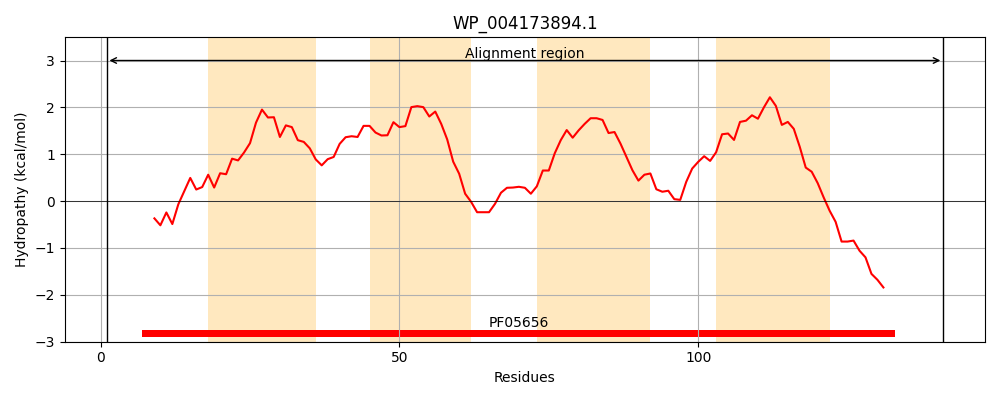
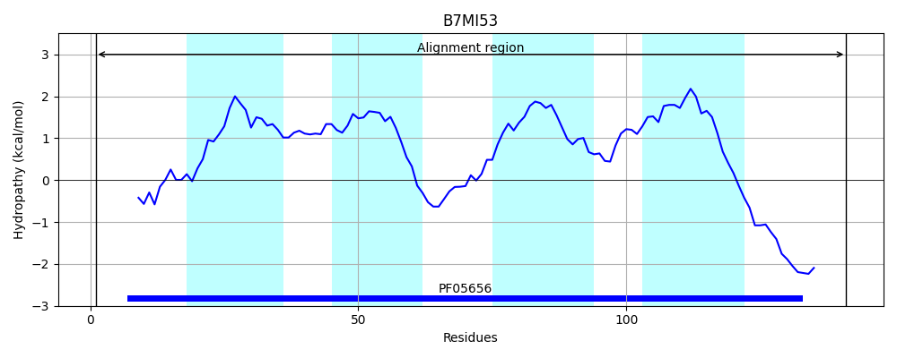
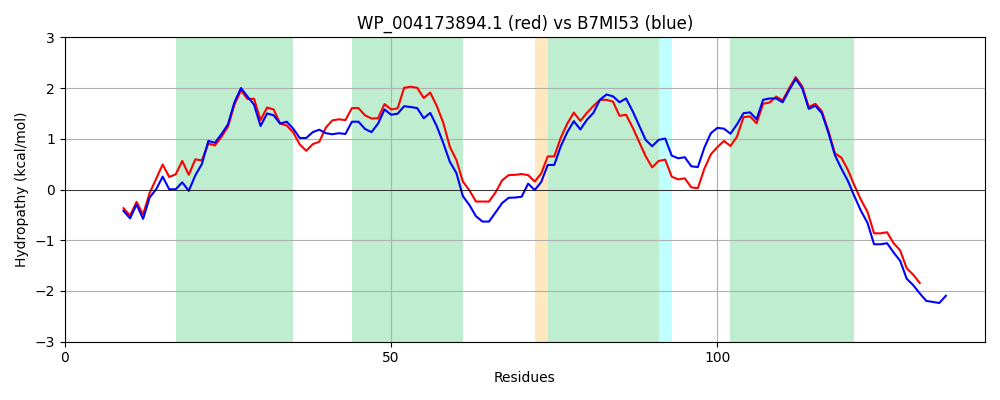

Hit Accession: B7MI53
Hit TCID: 9.B.124.2.2
Hit Description: gnl|BL_ORD_ID|2038 gnl|TC-DB|B7MI53|9.B.124.2.2 Uncharacterized protein OS=Escherichia coli O45:K1 (strain S88 / ExPEC) GN=yiiR PE=4 SV=1
Mach Len: 141
e:0.000000
Query TMS Count : 4
Hit TMS Count: 4
TMS-Overlap Score: 3.750000
Predicted Substrates:None
BLAST Alignment:
Score: 637 , Bit scores: 249 bits, E-value: 5.0e-87, Alignment length: 141, Percentage identity: 80
Query: 1 MTLQQWLFSIKGRIGRRDFWIWIAIWLVTMSALFTLAGSNLLNLQTAAFIIVCLLWPTAAVVVKRLHDRGKSGLWALLMILAWMLLAGNWAMLPQVWQWGVGRFVPTLIIVMMLIDLGAFVGTQGENKFGKETQDVRWKAD 141
MT+QQWLFS KGRIGRRDFWIWI +W M LF+LAG NLL++QTAAF +VCLLWPTAAV VKRLHDRG+SG WA LMI+AWMLLAGNWA+LP VWQW VGRFVPTLI+VMMLIDLGAFVGTQGENK+GK+TQDV++KAD
Sbjct: 1 MTIQQWLFSFKGRIGRRDFWIWIGLWFAGMLVLFSLAGKNLLDIQTAAFCLVCLLWPTAAVTVKRLHDRGRSGAWAFLMIVAWMLLAGNWAILPGVWQWAVGRFVPTLILVMMLIDLGAFVGTQGENKYGKDTQDVKYKAD 141 | Protein Hydropathy Plots: |
|---|
|  |  |
Pairwise Alignment-Hydropathy Plot:
|
|---|
|  |